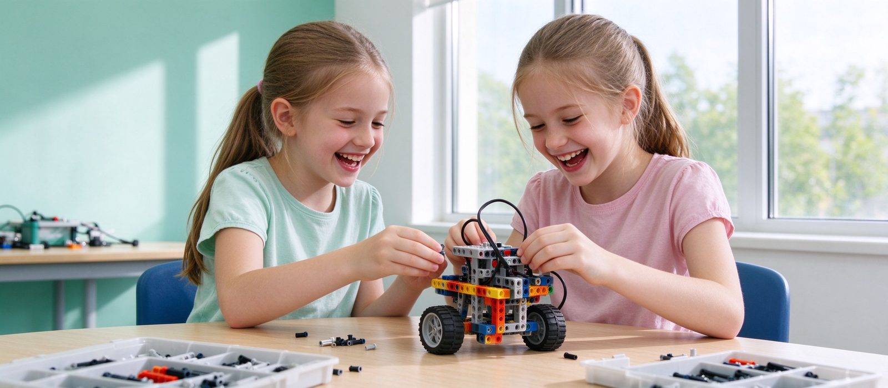

女孩学机器人编程，会不会成了班里的「少数派」？
机器人班里女孩确实偏少，但这不是能力问题，而是玩具货架、家长话术和课堂分组一起把她们劝退了。女孩的作品往往在结构细节、调试耐心和表达清楚上更强；真正该看的不是性别比例，而是课堂有没有把动手机会平均分给每个孩子。

结论先行：女孩在机器人班里少，主要原因不在孩子，而在三件大人做的事——玩具货架按性别分货、家长顺口说的「这是男孩玩的」、课堂分组时把女孩默认安排去记录和递零件。女孩一旦真的动手，作品往往在结构细节、调试耐心和讲解清楚上更强；判断一个班适不适合女孩，别看比例，看动手机会是不是平均的。
一、班里女孩少，是怎么变少的
多数机构的机器人班，女孩比例常在一到三成之间，年级越高越少。这个漏斗不是一次形成的：
- 六岁前的玩具货架：积木、机械、车辆类玩具的包装和广告基本以男孩为主角，女孩收到的是另一套礼物。孩子不是天生偏好不同，是选择被提前缩小了。
- 家长的一句顺口话：「这个男孩玩」「女孩学画画更好」——孩子听到的是「这类东西不属于我」，比任何课程介绍都有效。
- 课堂里的隐形分工：分组时老师习惯让男生接线、女生记录，几次课后女孩就成了「助手」，不再是主设计者。她不是学不会，是没被给过完整任务。
所以「女孩少」是一个自我强化的循环：来的少，分组容易被边缘化，体验变差，下次更少。
二、女孩在机器人课上的真实差异
先说清楚：个体差异远大于性别差异，下面说的只是统计上更常见的倾向，不是给谁贴标签。
- 女孩更常「先想后做」：愿意先把结构关系想明白再动手，起步慢一点，但拆改次数少。
- 调试耐心更长：程序跑偏时更愿意一段一段查，而不是推翻重来。机器人课最耗时的就是调试，这份耐心很值钱。
- 表达更完整：展示作品时能说清「为什么这么改」，这直接影响她后面参加答辩型赛项的表现。
- 男孩更常「先做再想」：上手快、试错多，容易先跑起来，也容易卡在同一个错误上反复撞。
两种路径都能走到终点。课堂的问题在于：如果老师只夸「谁先跑起来」，就等于只奖励了一种路径。
三、四个观察点：这个班对女孩友好吗
- 任务主题是否单一：如果所有题目都是赛车、对抗、抓取，等于默认了兴趣方向。好的题目会同时有「做一个会送东西的车」「做一个会跟着人走的装置」这类生活化任务。
- 分组是否轮换角色：搭建、编程、调试、讲解应该轮着来。固定分工三次以上，就有人被固定在助手位。
- 老师提问怎么分配：提问是不是总落在同一个孩子身上；女孩答错时是被追问还是被跳过，这两者差别很大。
- 展示环节讲什么：只展示成品，还是要求讲「失败了几次、怎么改的」。后者才是把思考过程当成成果。
四、家长可以做的三件事
第一，别用特殊化的话术。「女孩学这个很酷」「女孩学理工不容易」听起来是鼓励，实际是在告诉她这是例外。直接说「这个任务你来定方案」就够了。
第二，从生活问题切入。家里的东西够不着、书包太重、宠物喂食忘了——这些是她自己会关心的问题，比「学编程将来有用」有说服力。
第三，允许她做「不实用」的作品。会发光但不会走的装置、只会转圈的机械花，也是完整的工程练习。别急着问「这个有什么用」。
五、什么情况下确实不适合
有三种情况不必勉强：孩子明确排斥动手、只把课当成和同伴见面的场合，且持续三个月以上没有变化；机构本身把女孩当招生展示的「稀缺样本」，每次活动都让她站台而不是上课；家庭时间已经被排满，每次来上课都是赶场。这几种情况下停一停，比硬撑更划算。
另外，如果孩子喜欢的是纯粹的画面创作而不是机械与调试，Scratch 做动画、3D 建模这类方向同样能承接她的兴趣，不必挤在机器人这一条路上。
六、到校能看什么
我们在天津市河西区大沽南路 459 号下瓦房晶采大厦写字楼四楼 408 室，2–4 人小班，三年级以下 60 分钟、三年级以上 120 分钟，一周一次。试听课上不用听介绍，看两件事就够了：女孩在这节课上有没有独立完成一个闭环任务；老师点评时讲的是结果还是过程。
预约体验课